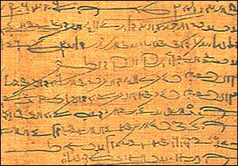

Demotic script

Demotic script became the common script in ancient Egypt from about 700 B.C.. It was called 'sekh shat' ('writing for documents') by the ancient Egyptians. The word 'demotic' comes from the Greek word (demotika) for the script. Demotic was used for government records, literature and letters.